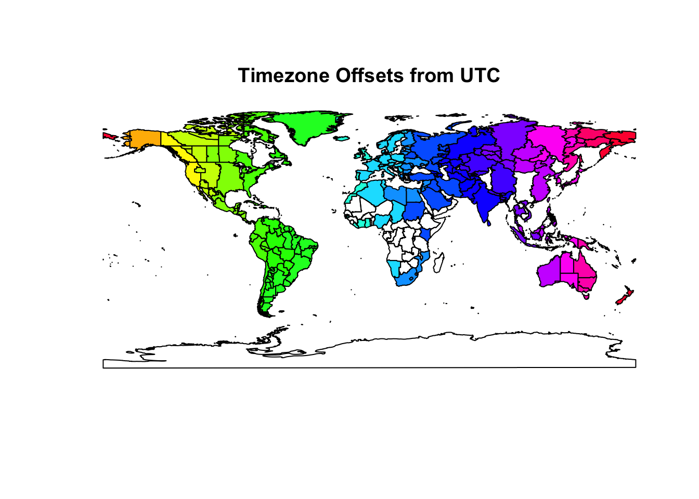
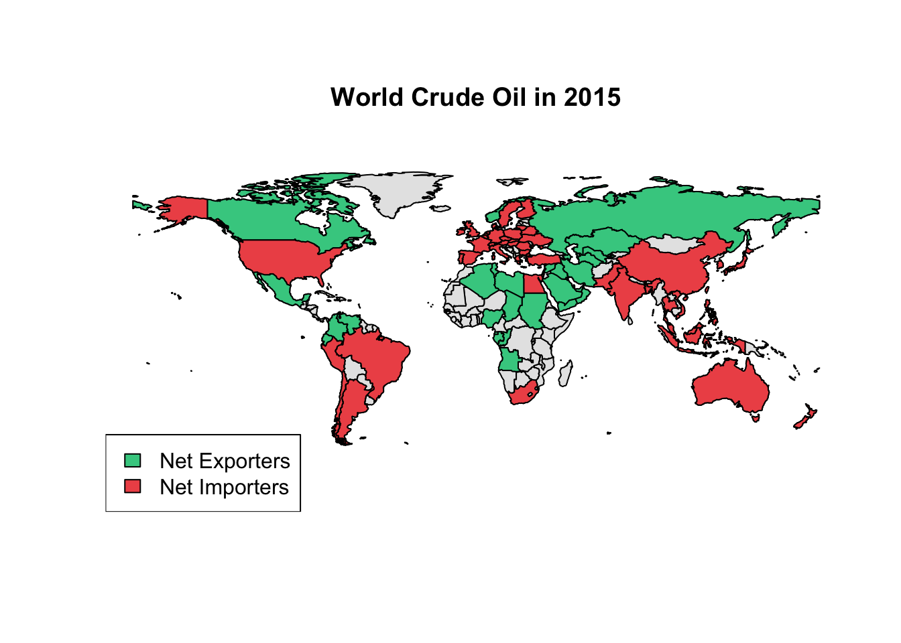

vignettes/MazamaSpatialUtils.Rmd
MazamaSpatialUtils.RmdThe MazamaSpatialUtils package was created by MazamaScience to regularize our work with spatial data. The sp, rgdal and maptools packages have made it much easier to work with spatial data found in shapefiles. Many sources of shapefile data are available and can be used to make beautiful maps in R. Unfortunately, the data attached to these datasets, even when fairly complete, often lacks standardized identifiers such as the ISO 3166-1 alpha-2 encodings for countries. Maddeningly, even when these ISO codes are used, the dataframe column in which they are stored does not have a standardized name. It may be called ISO or ISO2 or alpha or COUNTRY or any of a dozen other names we have seen.
While many mapping packages provide ‘natural’ naming of countries, those who wish to develop operational, GIS-like systems need something that is both standardized and language-independent. The ISO 3166-1 alpha-2 encodings have emerged as the de facto standard for this sort of work. In similar fashion, ISO 3166-2 alpha-2 encodings are available for the next administrative level down – state/province/oblast, etc. For timezones, the de facto standard is the set of Olson timezones used in all UNIX systems.
The main goal of this package is to create an internally standardized set of spatial data that we can use in various projects. Along with three built-in datasets, this package provides convert~() functions for other spatial datasets that we currently use. These convert functions all follow the same recipe:
Other datasets can be added following the same procedure.
The ‘package internal standards’ are very simple.
If other columns contain these data, those columns must be renamed or duplicated with the internally standardized name. This simple level of consistency makes it possible to generate maps for any data that is ISO encoded. It also makes it possible to create functions that return the country, state or timezone associated with a set of locations.
The core functionality for which this package was developed is determining spatial information associated with a set of locations.
Current functionality includes the following:
getCountry~(lon,lat,...) – returns names, ISO codes and other country-level data specified lo cationsgetState~(lon,lat,...) – returns names, ISO codes and other state-level at specified locationsgetUSCounty~(lon,lat,...) – returns names and other county-level data at specified locationsgetTimezones(lon,lat,...) – returns Olson timezones and other data at specified locationsgetHUC~(lon,lat,...) – returns USGS Hydrologic Unit Codes and other data at specified locationsA generic getSpatialData(lon,lat,...) returns a dataframe whose rows are associated with specified locations. This function can be used with newly converted SpatialPolygonsDataFrames.
For those working with geo-located data, the ability to enhance location metadata with this information can be extremely helpful.
When using MazamaSpatialUtils, always run setSpatialDataDir(<spatial_data_directory>) first. This sets the directory where spatial data will be installed and loaded from.
MazamaSpatialUtils has three built-in datasets:
SimpleCountries – country outlinesSimpleCountriesEEZ – country outlines including Exclusive Economic Zones over waterSimpleTimezones – timezonesVersion 0.5.x of the package is built around the three built-in datasets and several other core datasets that may be installed including:
2 Mb EEZCountries.RData – country boundaries including Exclusive Economic Zones15 Mb NaturalEarthAdm1.RData – state/province/oblast level boundaries61 Mb OSMTimezones.RData – Open Street Map high resolution time zones4 Mb TMWorldBorders.RData – high resolution country level boundaries48 Mb TerrestrialEcoregions.RData – terrestrial eco-regions7 Mb USCensus115thCongress.RData – US congressional districts2 Mb USCensusCounties.RData – US county level boundaries3 Mb USCensusStates.RData – US state level boundaries3 Mb USIndianLands.RData – US tribal boundaries16 Mb WorldTimezones.RData – high resolution timezonesInstall these with:
setSpatialDataDir('~/Data/Spatial')
installSpatialData()This may take some time to download and untar the 170 Mb file.
Once datasets have been installed, loadSpatialData() can be used load datasets found in the SpatialDataDir that match a particular pattern, e.g:
loadSpatialData('NaturalEarthAdm1')
loadSpatialData('USCensus')Additional watershed data from the Watershed Boundary Dataset are quite large and can be downloaded separately from http://mazamascience.com/RData/Spatial.
38 Mb WBDHU2.RData – USGS level 2 watersheds107 Mb WBDHU4.RData – USGS level 4 watersheds136 Mb WBDHU6.RData – USGS level 6 watersheds294 Mb WBDHU8.RData – USGS level 8 watersheds768 Mb WBDHU10.RData – USGS level 10 watersheds1.4 Gb WBDHU12.RData – USGS level 12 watershedsgetCountry() and getCountryCode()
These two functions are used for assigning countries to one or many locations. getCountry() returns English country names and getCountryCode() returns the ISO-3166 two character country code. Both functions can be passed allData = TRUE which returns a dataframe with more information on the countries. You can also specify countryCodes = c(<codes>) to speed up searching by restricting the search to polygons associated within those countries.
These functions use the package-internal SimpleCountries dataset which can be used without loading any additional datasets.
In this example we’ll find which countries a vector of points fall in.
library(MazamaSpatialUtils)## Loading required package: splon <- c(-122.3, -73.5, 21.1, 2.5)
lat <- c(47.5, 40.75, 52.1, 48.5)
# Get countries/codes associated with locations
getCountry(lon, lat)## [1] "United States" "United States" "Poland" "France"getCountryCode(lon, lat)## [1] "US" "US" "PL" "FR"# Review all available data
getCountry(lon, lat, allData=TRUE)## objectID ISO3 countryName changes countryCode polygonID
## 1 232 USA United States <NA> US 232
## 2 232 USA United States <NA> US 232
## 3 181 POL Poland <NA> PL 181
## 4 87 FRA France 2014-10 FR 87getState() and getStateCode()
Similar to above, these functions return state names and ISO 3166 code. They also take the same arguments. Adding the countryCodes argument is more important for getState() and getStateCode() because the NaturalEarthAdm1 dataset is fairly large. Lets use the same lat and lon variables as above and assign states to those locations.
These functions require installation of the large NaturalEarthAdm1 dataset which is not distributed with the package.
(The next block of code is not evaluated in the vignette.)
# Load states dataset if you haven't already
loadSpatialData('NaturalEarthAdm1')
# Get country codes associated with locations
countryCodes <- getCountryCode(lon, lat)
# Pass the countryCodes as an argument to speed everything up
getState(lon, lat, countryCodes = countryCodes)
getStateCode(lon, lat, countryCodes = countryCodes)
# This is a very detailed dataset so we'll grab a few important columns
states <- getState(lon, lat, allData=TRUE, countryCodes = countryCodes)
states[c('countryCode', 'stateCode', 'stateName')]getTimezone()
Returns the Olsen Timezone where the given points are located. Arguments are the same as the previous functions. allData=TRUE will return other useful information such as the UTC Offset.
These functions use the package-internal SimpleTimezones dataset which can be used without loading any additional datasets.
# Find the timezones the points are in
getTimezone(lon, lat)## [1] "America/Los_Angeles" "America/New_York" "Europe/Warsaw"
## [4] "Europe/Paris"# Get country codes associated with locations
countryCodes <- getCountryCode(lon, lat)
# Pass the countryCodes as an argument to potentially speed things up
getTimezone(lon, lat, countryCodes = countryCodes)## [1] "America/Los_Angeles" "America/New_York" "Europe/Warsaw"
## [4] "Europe/Paris"# Review all available data
getTimezone(lon, lat, allData=TRUE, countryCodes = countryCodes)## timezone UTC_offset UTC_DST_offset countryCode longitude
## 1 America/Los_Angeles -8 -7 US -118.242778
## 2 America/New_York -5 -4 US -74.006389
## 3 Europe/Warsaw 1 2 PL 21.000000
## 4 Europe/Paris 1 2 FR 2.333333
## latitude polygonID
## 1 34.05083 America/Los_Angeles
## 2 40.71167 America/New_York
## 3 52.25417 Europe/Warsaw
## 4 48.88111 Europe/ParisgetUSCounty()
Returns the US County which name pairs of coordinates fall in. The arguments are similar as above except that stateCodes=c() is used instead of countryCodes=c() since this dataset is US specific.
(The next block of code is not evaluated in the vignette.)
# Load counties dataset if you haven't already
loadSpatialData("USCensusCounties")
# New dataset of points only in the US
stateCodes <- getStateCode(lon,lat)
# Optionally pass the stateCodes as an argument to speed everything up
getUSCounty(lon, lat, stateCodes=stateCodes)
getUSCounty(lon, lat, allData=TRUE, stateCodes=stateCodes)While identifying the states, countries and timezones associated with a set of locations is important, we can also generate some quick eye candy with these datasets. Let’s color the timezones by the data variable ‘UTC_offset’
library(sp) # For spatial plotting
# Assign timezones polygons an index based on UTC_offset
colorIndices <- .bincode(SimpleTimezones@data$UTC_offset, breaks=seq(-12.5,12.5,1))
# Color our timezones by UTC_offset
plot(SimpleTimezones, col=rainbow(25)[colorIndices])
title(line=0,'Timezone Offsets from UTC')
On of the main reasons for ensuring that our spatial datasets use ISO encoding is that it makes it easy to generate plots with any datasets that use that encoding. Here is a slightly more involved example using Energy data from the British Petroleum Statistical Review that has been ISO-encoded.
library(sp) # For spatial plotting
# Read in ISO-encoded oil production and consumption data
prod <- read.csv(url('http://mazamascience.com/OilExport/BP_2016_oil_production_bbl.csv'),
skip=6, stringsAsFactors=FALSE, na.strings='na')
cons <- read.csv(url('http://mazamascience.com/OilExport/BP_2016_oil_consumption_bbl.csv'),
skip=6, stringsAsFactors=FALSE, na.strings='na')
# Only work with ISO-encoded columns of data
prodCountryCodes <- names(prod)[ stringr::str_length(names(prod)) == 2 ]
consCountryCodes <- names(cons)[ stringr::str_length(names(cons)) == 2 ]
# Use the last row (most recent data)
lastRow <- nrow(prod)
year <- prod$YEAR[lastRow]
# Neither dataframe contains all countries so create four categories based on the
# amount of information we have: netExporters, netImporters, exportOnly, importOnly
sharedCountryCodes <- intersect(prodCountryCodes,consCountryCodes)
net <- prod[lastRow, sharedCountryCodes] - cons[lastRow, sharedCountryCodes]
# Find codes associated with each category
netExportCodes <- sharedCountryCodes[net > 0]
netImportCodes <- sharedCountryCodes[net <= 0]
exportOnlyCodes <- setdiff(prodCountryCodes,consCountryCodes)
importOnlyCodes <- setdiff(consCountryCodes,prodCountryCodes)
# Create a logical 'mask' associated with each category
netExportMask <- SimpleCountries@data$countryCode %in% netExportCodes
netImportMask <- SimpleCountries@data$countryCode %in% netImportCodes
onlyExportMask <- SimpleCountries@data$countryCode %in% exportOnlyCodes
onlyImportMask <- SimpleCountries@data$countryCode %in% importOnlyCodes
color_export = '#40CC90'
color_import = '#EE5555'
color_missing = 'gray90'
# Base plot (without Antarctica)
notAQ <- SimpleCountries@data$countryCode != 'AQ'
plot(SimpleCountries[notAQ,],col=color_missing)
plot(SimpleCountries[netExportMask,],col=color_export,add=TRUE)
plot(SimpleCountries[onlyExportMask,],col=color_export,add=TRUE)
plot(SimpleCountries[netImportMask,],col=color_import,add=TRUE)
plot(SimpleCountries[onlyImportMask,],col=color_import,add=TRUE)
legend('bottomleft',legend=c('Net Exporters','Net Importers'),fill=c(color_export,color_import))
title(line=0,paste('World Crude Oil in',year))